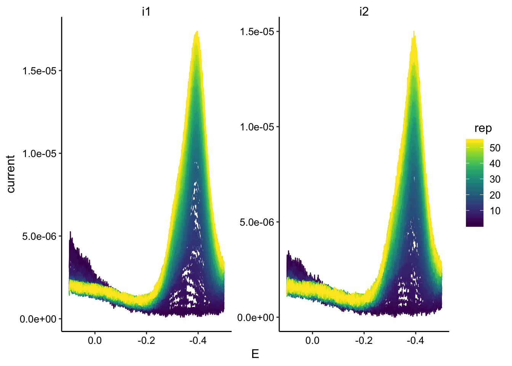
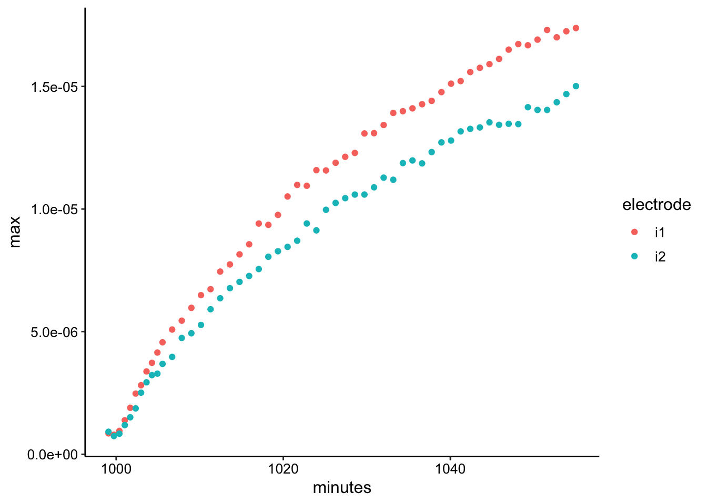
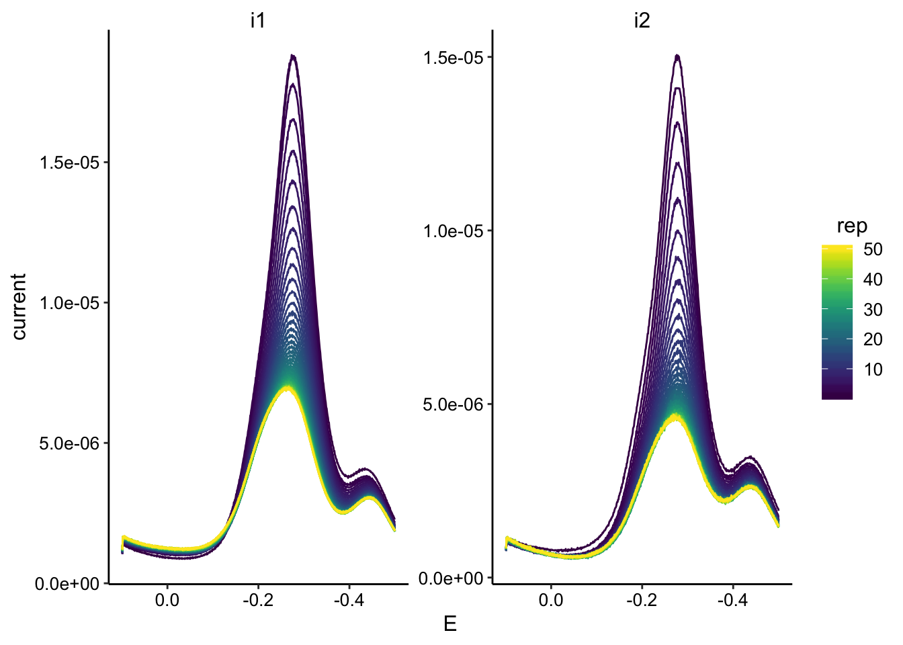
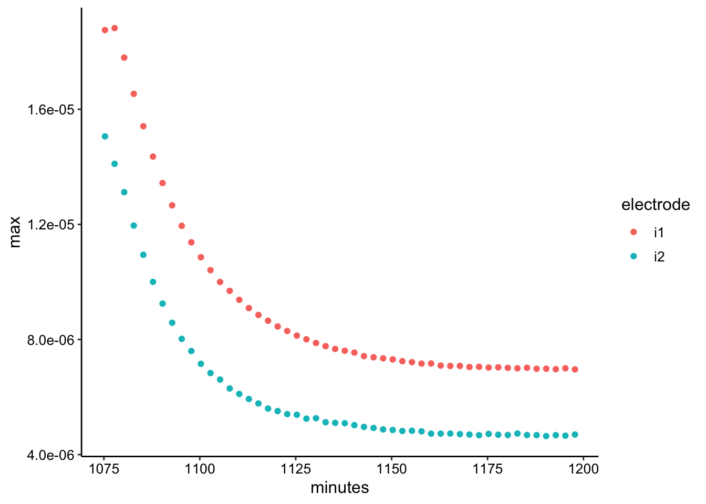
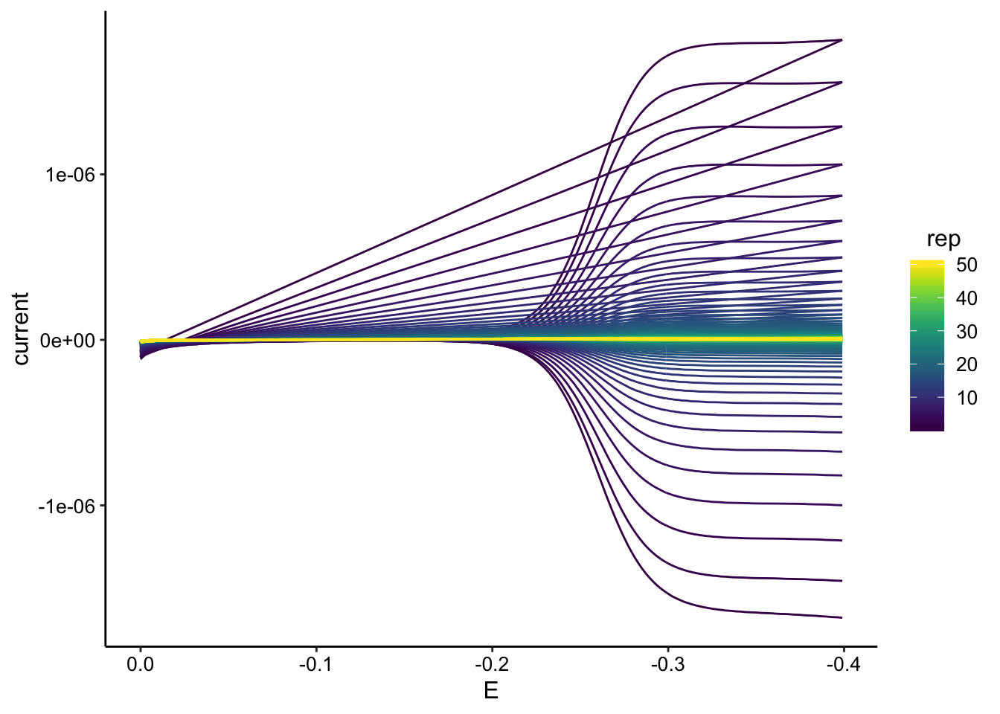
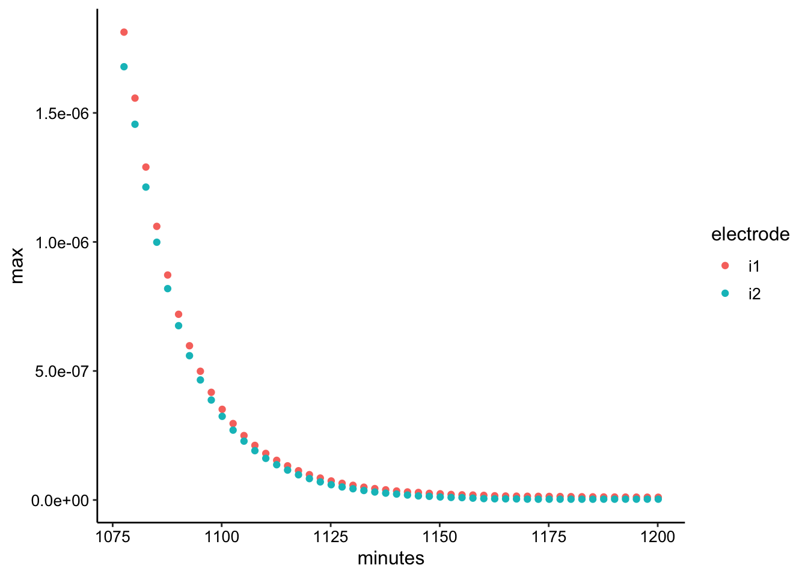
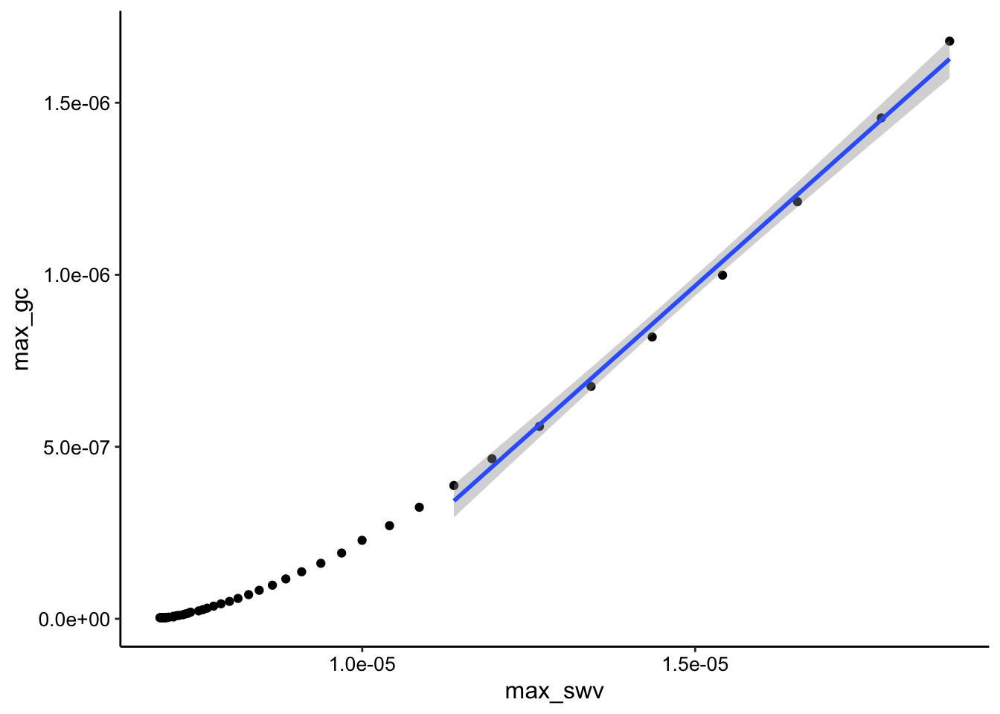
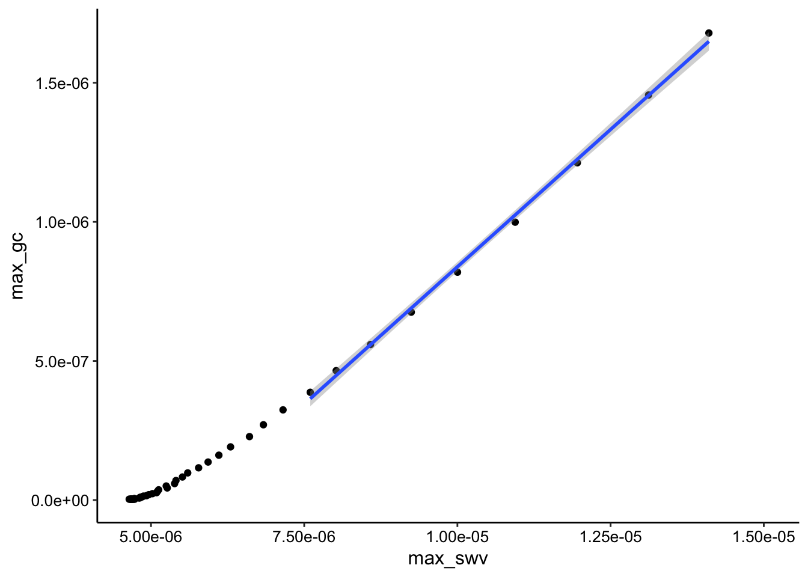

library(tidyverse)
library(cowplot)
library(broom)
library(modelr)
library(viridis)
library(lubridate)
library(hms)
library(kableExtra)
knitr::opts_chunk$set(tidy.opts=list(width.cutoff=60),tidy=TRUE, echo = TRUE, message=FALSE, warning=FALSE, fig.align="center")
source("../../tools/echem_processing_tools.R")
source("../../tools/plotting_tools.R")
theme_set(theme_1())50uL droplet of 1% agarose (PBS50) solidified on IDA then soaked in 75uM PYO.
Acquired SWVs every 30 seconds during soak.
soak_data_path = "../Data/Soak/"
# divide swv into rep and subrep and then subtract 1 from rep
# to match with GC
SWV_soak_filenames <- dir(path = soak_data_path, pattern = "[SWV]+.+[txt]$")
SWV_soak_file_paths <- paste(soak_data_path, SWV_soak_filenames,
sep = "")
swv_data_cols <- c("E", "i1", "i2")
filename_cols = c("PHZadded", "PYO", "reactor", "echem", "rep")
swv_skip_rows = 18
swv_soak_data <- echem_import_to_df(filenames = SWV_soak_filenames,
file_paths = SWV_soak_file_paths, data_cols = swv_data_cols,
skip_rows = swv_skip_rows, filename_cols = filename_cols,
rep = T)
ggplot(swv_soak_data, aes(x = E, y = current, color = rep, group = rep)) +
geom_path() + facet_wrap(~electrode, scales = "free") + scale_color_viridis() +
scale_x_reverse()
You can see the PYO peak is shifted significantly negative. I later found out this was due to the reference electrode. They probably need to be reconditioned because many had this problem.
swv_soak_max <- swv_soak_data %>% group_by(rep, electrode) %>%
filter(E < -0.2) %>% summarise(max = max(current), minutes = mean(minutes))
ggplot(swv_soak_max, aes(x = minutes, y = max, color = electrode)) +
geom_point()
As expected for such a thick layer (a few mm) it took a while for the PYO to diffuse through the agarose to the electrode. Even after 45 min the SWV signal hasn’t quite leveled off.
tran_data_path = "../Data/Transfer/"
# divide swv into rep and subrep and then subtract 1 from rep
# to match with GC
SWV_tran_filenames <- dir(path = tran_data_path, pattern = "[swv]+.+[txt]$")
SWV_tran_file_paths <- paste(tran_data_path, SWV_tran_filenames,
sep = "")
swv_tran_data_cols <- c("E", "i1", "i2")
filename_cols = c("echem", "rep")
swv_skip_rows = 18
swv_tran_data <- echem_import_to_df(filenames = SWV_tran_filenames,
file_paths = SWV_tran_file_paths, data_cols = swv_tran_data_cols,
skip_rows = swv_skip_rows, filename_cols = filename_cols,
rep = T, PHZadded = F)
ggplot(swv_tran_data, aes(x = E, y = current, color = rep, group = rep)) +
geom_path() + facet_wrap(~electrode, scales = "free") + scale_color_viridis() +
scale_x_reverse()
So the obvious weird thing here is that the signal does not decay to zero even after ~150min. I tried replacing the media etc and the peak did not significantly diminish. I take this to mean that some of the PYO irreversibly adsorbed to the electrode. It’s unclear if the peak around -400mV came with the irreversibly bound PYO or not.
swv_tran_max <- swv_tran_data %>% group_by(rep, electrode) %>%
filter(E < -0.2) %>% summarise(max = max(current), minutes = mean(minutes))
ggplot(swv_tran_max, aes(x = minutes, y = max, color = electrode)) +
geom_point()
The signal decays as expected (although it doesn’t go to zero as mentioned above). Interestingly for the first two SWV i1 points you can see that the concentration doesn’t initially change, which is what we would expect for a thick enough layer - the outer PYO starts diffusing away before it affects the interior layers in contact with the electrode.
##GC
tran_data_path = "../Data/Transfer/"
# divide swv into rep and subrep and then subtract 1 from rep
# to match with GC
GC_tran_filenames <- dir(path = tran_data_path, pattern = "[gc]+.+[txt]$")
GC_tran_file_paths <- paste(tran_data_path, GC_tran_filenames,
sep = "")
gc_tran_data_cols <- c("E", "i1", "i2")
filename_cols = c("echem", "rep")
gc_skip_rows = 21
gc_tran_data <- echem_import_to_df(filenames = GC_tran_filenames,
file_paths = GC_tran_file_paths, data_cols = gc_tran_data_cols,
skip_rows = gc_skip_rows, filename_cols = filename_cols,
rep = T, PHZadded = F)
ggplot(gc_tran_data, aes(x = E, y = current, color = rep, group = rep)) +
geom_path() + scale_color_viridis() + scale_x_reverse()
GC signal looks beautiful and seems to go all the way to zero.
gc_tran_max <- gc_tran_data %>% group_by(rep, electrode) %>%
filter(E < -0.2) %>% summarise(max = max(abs(current)), minutes = mean(minutes))
ggplot(gc_tran_max, aes(x = minutes, y = max, color = electrode)) +
geom_point()
So the decay here looks reasonable, and it’s interesting that it goes all the way to zero. To me this confirmst that the persistent PYO peak for the SWV is adsorbed to each individual electrode (i1 and i2) and does not contribute to ET across the gap.
Let’s plot SWV vs. GC. Interestingly it looks like there is a subtle difference between the SWV i1 and i2
tran_max_comb_i1 <- left_join(swv_tran_max %>% ungroup() %>%
filter(electrode == "i1") %>% mutate(rep = rep - 1), gc_tran_max %>%
filter(electrode == "i2"), by = c("rep"), suffix = c("_swv",
"_gc"))
tran_max_comb_i2 <- left_join(swv_tran_max %>% ungroup() %>%
filter(electrode == "i2") %>% mutate(rep = rep - 1), gc_tran_max %>%
filter(electrode == "i2"), by = c("rep"), suffix = c("_swv",
"_gc"))GC collector vs. SWV i1:
ggplot(tran_max_comb_i1, aes(x = max_swv, y = max_gc)) + geom_point() +
geom_smooth(data = tran_max_comb_i1 %>% filter(rep < 10),
method = "lm")
GC collector vs. SWV i2:
ggplot(tran_max_comb_i2, aes(x = max_swv, y = max_gc)) + geom_point() +
geom_smooth(data = tran_max_comb_i2 %>% filter(rep < 10),
method = "lm")
You can see that the SWV i2 signal looks more linear than i1. However it is a little confusing why both plots are obviously curved beyond the first few datapoints. My theory is that this behavior has to do with the buildup of the adsorbed PYO.
Anyway, if we ignore the curved behavior for now and just fit the i2 datasets first 10 points (shown as geom smooth on the plot), let’s see if we are in the same Dap ballpark as with the calibrated solution PYO.
dap_from_swvGC <- function(m, t_p = 1/(2 * 300)) {
psi <- 0.7
# psi <- 0.75 A <- 0.013 #cm^2
A <- 0.025 #cm^2
S <- 18.4 #cm
d_ap <- (m * A * psi)^2/(S^2 * pi * t_p)
d_ap
}
lm_tran <- tidy(lm(max_gc ~ max_swv, data = tran_max_comb_i2 %>%
filter(rep < 10)), conf.int = T) %>% filter(term == "max_swv") %>%
mutate(dap = dap_from_swvGC(m = estimate)) %>% mutate(dap_high = dap_from_swvGC(m = conf.high)) %>%
mutate(dap_low = dap_from_swvGC(m = conf.low)) %>% mutate(dataset = "SWVvsGC")
lm_tran %>% kable() %>% kable_styling()| term | estimate | std.error | statistic | p.value | conf.low | conf.high | dap | dap_high | dap_low | dataset |
|---|---|---|---|---|---|---|---|---|---|---|
| max_swv | 0.1974624 | 0.0032697 | 60.39071 | 0 | 0.1897306 | 0.2051941 | 6.7e-06 | 7.3e-06 | 6.2e-06 | SWVvsGC |